4110A STEERING CONTROL
- Path
- Descriptions > 41 STEERING UNIT > 4110 STEERING CONTROL AND LINKAGE > 4110A STEERING CONTROL
- Kind
- system description
- Applies to
- all engines; all production periods
- Interactive page
- https://sloeber94.github.io/elrnDB-aGt/en/#/125000365
Applies to: all engines; all production periods
SPECIFCATIONS
VIEW OF STEERING COLUMN
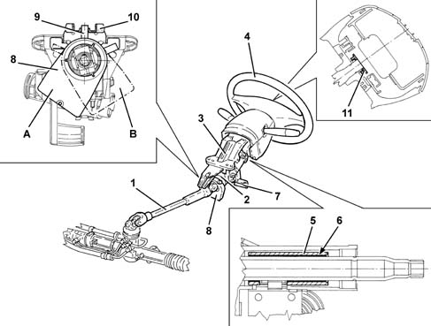
1 - Lower steering column
2 - Upper steering column
3 - Magnesium support
4 - Steering wheel
5 - Friction bush
6 - Ring spring
7 - Locking handle
8 - Position sensor
9 - Pin
10 - Anchoring fork
11 - Protective cap
A - Position sensor for left-hand drive
B - Position sensor for right-hand drive
CONSTRUCTION FEATURES
The steering column consists of:
- lower section with collapsible tube, which allows the position of the steering wheel to remain fixed during a frontal impact;
- upper section supported by a magnesium support, in turn attached to a steel bracket.
Because of their high rigidity, these components contribute significantly to reducing steering vibrations, with the advantage of improving driving comfort.
For versions with the VCD system
Characteristic of working principle 3350E VEHICLE DIRECTION CONTROL SYSTEM VDC
, level with the universal joint on the upper section, there is a steering position sensor. The sensor is kept in the correct working position by a pin which is inserted on the anchoring fork, present on the steering column mounting. There are two pins on the sensor, one for left-hand drive versions and one for right-hand drive versions. The correct position is shown in the figure.
When handling the steering column, use the protection, supplied with the spare part.
The sensor has two pins, one for left-hand drive versions and one for right-hand drive versions, and a point for connection to the electrical system on the side facing the steering wheel. Depending on the version, the pin is fitted in the anchoring pin and can slide to permit axial adjustment of the steering column. When handling the steering column, use the specific sensor guard which is supplied with the spare part.
On the upper section of the steering column, there is also a friction device, consisting of a friction bush and a ring spring, characterized by a surface with is smooth on the inside and splined on the inside, called 'Rencol ring'. The splined part is press-fitted on the upper steering shaft and cuts slightly into the surface of the latter, thus becoming integral with the shaft. The smooth part is a press fit on the inner diameter of the friction bush, and can slide, by rotation, in relation to the bush with a torque of between 10 and 24 daNm.
The friction function of the friction system guarantees, in the case of break-in:
- the security of the steering column;
- impossibility of lock mechanism breakage.
Steering wheel
VIEW OF STEERING WHEEL IN BASIC CONFIGURATION
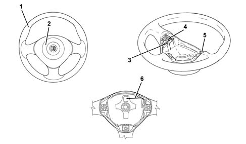
1 - Steering wheel
2 - Air Bag module
3 - Horn cable
4 - Actuating springs
5 - Horn connector
6 - Seat for wiring
The steering wheel is made using a magnesium structure, which offers greater strength and lighter weight, and is coated with a material which is pleasant to touch. On request it may be leather covered for greater driving comfort.
The Air Bag module is contained inside the steering wheel
Characteristic of working principle 5580C AIR BAG SYSTEM
. Along the perimeter of the module housing, there is the horn control cable
Characteristic of working principle 5550B HORNS
which ends with a two-way connector on the right. The connection to the electrical system is via the white two-way connector which projects from the clock spring
Characteristic of working principle 5580C AIR BAG SYSTEM
.
The horn is activated by the action of the springs, present near the Air Bag module bolts, which close the circuit.
VIEW OF STEERING WHEEL IN THE CONFIGURATION WITH RADIO CONTROLS AND SELESPEED GEARBOX CONTROL LEVERS
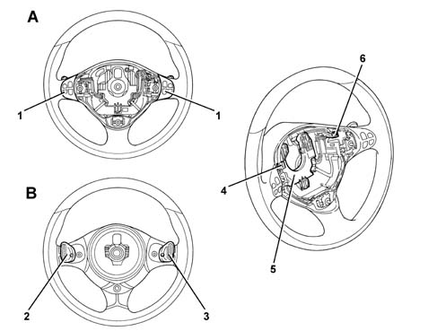
A - Upper view of steering wheel
B - Lower view of steering wheel
1 - Radio controls
2 - Upward shift Selespeed control (1...5)
3 - Downward shift Selespeed control
4 - Point of connection to electrical system
5 - Junction box
6 - Horn cable
Components
Depending on the version, on the steering wheel - apart from the Air Bag module and horn - there are the radio electrical controls and, on Selespeed versions, the levers for the electrical controls of the gearbox
Characteristic of working principle 2127A HYDRAULIC TRANSMISSION EXTERNAL LINKAGE
.
VIEW OF ELECTRICAL CONTROLS ON STEERING WHEEL IN 'BASIC' CONFIGURATION
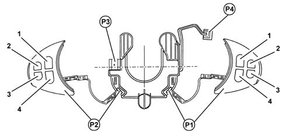
P1 - Right radio controls embellishment
1 - Scan + control
2 - Source control
3 - Not used
4 - Scan - control
P2 - Left radio controls embellishment
1 - Volume + control
2 - Mute control
3 - Not used
4 - Volume - control
P3 - Electrical system junction box
P4 - Horn connection
SUMMARY DIAGRAM OF CONNECTIONS IN BASIC CONFIGURATION
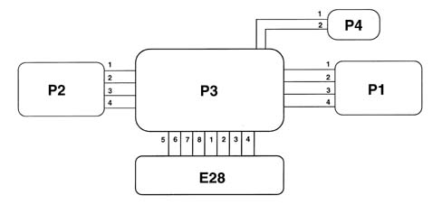
P1 - Right radio controls embellishment
Pin 1 - Illumination LED supply
Pin 2 - Illumination LED earth
Pin 3 - Signal for radio control RS1
Pin 4 - Earth for control signal
P2 - Left radio controls embellishment
Pin 1 - Illumination LED supply
Pin 2 - Illumination LED earth
Pin 3 - Signal for radio control RS2
Pin 4 - Earth for control signal
P3 - Electrical system junction box
Pin 1 - RS1 signal
Pin 2 - +15
Pin 3 - Not connected
Pin 4 - Not connected
Pin 5 - RS2 signal
Pin 6 - Earth
Pin 7 - Horn
Pin 8 - Earth for RS1/RS2 signals
P4 - Horn connection
Pin 1 - Horn control
Pin 2 - Control signal earth
E28 - Clockspring
WIRING DIAGRAM OF 'BASIC' CONFIGURATION
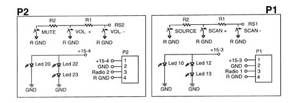
P1 - Right radio controls embellishment
P2 - Left radio controls embellishment
R1 - 100 ohm resistor
R2 - 220 ohm resistor
VIEW OF ELECTRICAL CONTROLS ON STEERING WHEEL IN 'PLUS' CONFORMATION
P1 - Right radio controls embellishment
1 - Scan + control
2 - Source control
3 - Telephone control
4 - Scan - control
P2 - Left radio controls embellishment
1 - Volume + control
2 - Mute control
3 - Voice control
4 - Volume - control
P3 - Electrical system junction box
P4 - Horn connection
SUMMARY DIAGRAM OF CONNECTIONS IN 'PLUS' CONFIGURATION
P1 - Right radio controls embellishment
Pin 1 - Illumination LED supply
Pin 2 - Illumination LED earth
Pin 3 - Signal for radio control/telephone RS1
Pin 4 - Earth for control signal
P2 - Left radio controls embellishment
Pin 1 - Illumination LED supply
Pin 2 - Illumination LED earth
Pin 3 - Signal for radio control speech recognition RS2
Pin 4 - Earth for control signal
P3 - Electrical system junction box
Pin 1 - RS1 signal
PIn 2 - + 15
Pin 3 - Not connected
Pin 4 - Not connected
Pin 5 - RS2 signal
Pin 6 - Earth
Pin 7 - Horn
Pin 8 - Earth for RS1/RS2 signals
P4 - Horn connection
Pin 1 - Horn control
Pin 2 - Control signal earth
E28 - Clockspring
WIRING DIAGRAM FOR 'PLUS' CONFIGURATION
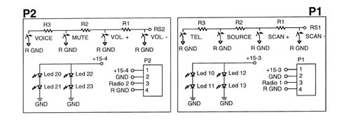
P1 - Right radio controls embellishment
P2 - Left radio controls embellishment
R1 - 100 ohm resistor
R2 - 220 ohm resistor
R3 - 680 ohm resistor
VIEW OF ELECTRICAL CONTROLS ON STEERING WHEEL IN 'SELESPEED' CONFIGURATION
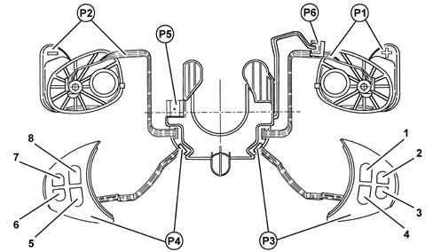
P1 - Upward shift control lever (1...5)
P2 - Downward shift control lever (5...1)
P3 - Right radio controls embellishment
1 - Scan + control
2 - Source control
3 - Telephone control
4 - Scan - control
P4 - Left radio controls embellishment
1 - Volume + control
2 - Mute control
3 - Voice control
4 - Volume - control
P5 - Electrical system junction box
P6 - Horn connection
SUMMARY DIAGRAM OF CONNECTIONS IN 'SELESPEED' CONFIGURATION
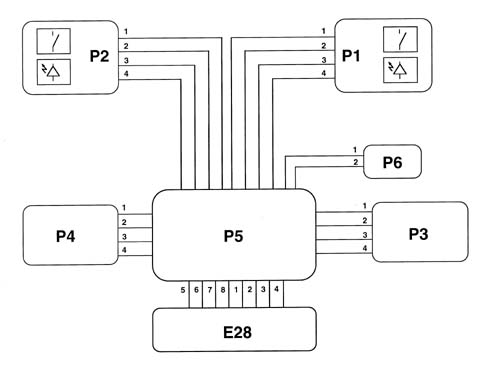
P1 - Upward shift control lever (1...5)
Pin 1 - Illumination LED supply
Pin 2 - Illumination LED earth
Pin 3 - Gear control signal (1...5)
Pin 4 - Earth for gear control signal
P2 - Downward shift control lever (5...1)
Pin 1 - Illumination LED supply
Pin 2 - Illumination LED earth
Pin 3 - Gear control signal (5...1)
Pin 4 - Earth for gear control signal
P3 - Right radio controls embellishment
Pin 1 - Illumination LED supply
Pin 2 - Illumination LED earth
Pin 3 - Signal for radio control/telephone RS1
Pin 4 - Earth for control signal
P4 - Left radio controls embellishment
Pin 1 - Illumination LED supply
Pin 2 - Illumination LED earth
Pin 3 - Signal for radio control speech recognition RS2
Pin 4 - Earth for control signal
P5 - Electrical system junction box
Pin 1 - RS1 signal
Pin 2 - +15
Pin 3 - Gear control signal earth
Pin 4 - Gear control signal
Pin 5 - RS2 signal
Pin 6 - Earth
Pin 7 - Horn
Pin 8 - Earth for RS1/RS2 signals
P6 - Horn connection
Pin 1 - Horn control
Pin 2 - Control signal earth
E28 - Clockspring
WIRING DIAGRAM OF 'SELESPEED' CONFIGURATION
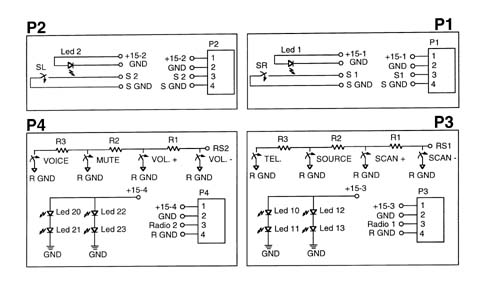
P1 - Upward shift control lever (1...5)
P2 - Downward shift control lever (5...1)
P3 - Right radio controls embellishment
P4 - Left radio controls embellishment
R1 - 100 ohm resistor
R2 - 220 ohm resistor
R3 - 680 ohm resistor
Junction box
VIEW OF PIN OUT
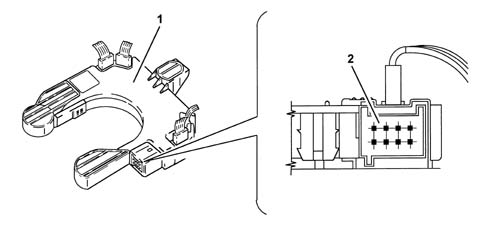
1 - Junction box
2 - Pin out
The connection to the electrical system is via a junction box, located on the bottom of the Air Bag module housing.
On the box, to which all the electrical functions of the steering wheel lead, there is an 8-pin connector which is connected to the corresponding connector emerging from the clock spring
Characteristic of working principle 5580C AIR BAG SYSTEM
.